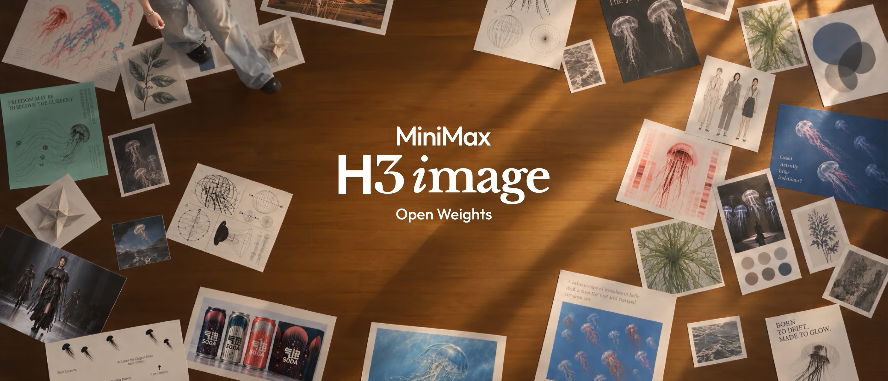
Hailuo AI API MiniMax Website GitHub Hugging Face
ModelScope MiniMax AI WeChat Discord LICENSE
MiniMax-H3-Image
Online API
Use MiniMax-H3-Image directly via API.
- Global: platform.minimax.io | CN: platform.minimax.cn
API docs:
Online App
Use MiniMax-H3-Image directly via App.
- WebApp Global: hailuoai.video | CN: hailuoai.com
- Desktop Global: agent.minimax.io | CN: agent.minimax.cn
Introduction
MiniMax-H3-Image is a state-of-the-art open-source model for image generation and editing from the MiniMax H3 family. It combines intelligent understanding of creative intent with the ability to build visual worlds: with precise instruction following, it develops a creative concept into concrete characters, scenes and atmosphere. Generation and editing are unified in one checkpoint, which generates images from text (text-to-image) and edits one or more reference images (image editing), giving creators and developers a flexible and controllable way to create images.
It generates images of about 16 megapixels at every aspect ratio, from 4096x4096 (1:1) to 6272x2688 (21:9), directly and without an upscaler (see Sizes). The checkpoint is distilled to 6 sampling steps (6 NFEs) with no classifier-free guidance. Its diffusion transformer (DiT) has the H3 architecture without the audio layers, and it uses the MiniMax-H3 text encoder unchanged.
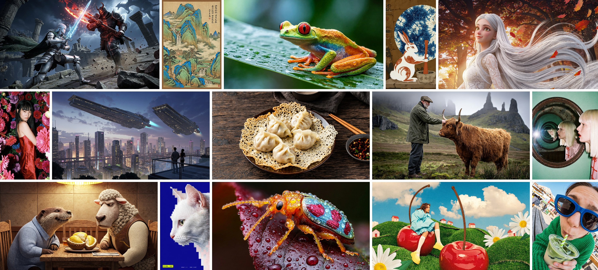
Highlights
MiniMax-H3-Image brings together three core strengths: speed, image quality, and instruction following.
- 16-megapixel images at a practical computational cost. Compared with the 1–4 MP outputs
common today, 16 MP (4096 × 4096) images offer far more detail but typically require substantially more computation. MiniMax-H3-Image keeps that computational cost manageable, making 16 MP generation practical for everyday creation.
- Rich detail. Remarkable realism. MiniMax-H3-Image goes beyond the familiar “AI look” to
produce images with intricate detail and lifelike realism, opening up more possibilities for creative and professional use. It brings generated imagery closer to the richness and nuance of the real visual world.
- Stronger instruction following. Greater creative control. Great image generation goes
beyond beautiful pictures—it helps creators bring their ideas to life. MiniMax-H3-Image delivers the strongest instruction following among open-source models and supports up to 16 reference images, giving creators more control over the final result.
Model Zoo
| Model | Role | Precision | Size | Hugging Face |
|---|---|---|---|---|
| MiniMax-H3-Image | Text-to-image and image editing | BF16 (DiT) | 68.65 GB | MiniMaxAI/MiniMax-H3-Image |
| MiniMax-H3-Image-PE (optional) | Prompt expander for text-to-image | NVFP4 | 17.9 GB | MiniMaxAI/MiniMax-H3-Image-PE |
Model Architecture
MiniMax-H3-Image follows the H3-Base design with the audio branch removed. The text prompt and the reference images are encoded by the H3 text encoder; the reference images are also encoded by the image VAE. All tokens form one packed sequence for a single-stream transformer, which predicts the latent of the target image. The VAE decodes that latent into the image.
- Text encoder: the full Qwen3-VL text encoder of MiniMax-H3, unchanged. The DiT reads
the hidden states of its 50th layer.
- Image VAE: a CNN encoder and a 2D ViT decoder (24 layers), with 16x spatial
downsampling and 24 latent channels. The DiT patchifies the latent with a 2x2 patch, so each transformer token covers 32x32 pixels.
- Diffusion transformer: 33.1B parameters, a dense single-stream transformer with 50
layers (hidden size 5376, 56 attention heads, FFN size 14336) and 3D multimodal RoPE, the same as the H3-Omni-Transformer. The weights are BF16; the embedding, timestep and output layers are FP32.
Quick Start
Download
| Component | Content | Size |
|---|---|---|
transformer/ | DiT: BF16, with the embedding, timestep and output layers in FP32. | 66.28 GB |
pdd_fused_heads.safetensors, pdd_config.json | The per-step output heads that replace the transformer's output layer, and the sampling schedule. | 12 MB |
vae/ | Image VAE, FP32. | 2.34 GB |
tokenizer/, processor/ | Qwen3-VL tokenizer and processor, identical to MiniMax-H3. | 23 MB |
| Text encoder | Not in this repository. model_index.json loads it from MiniMaxAI/MiniMax-H3, folder text_encoder/. If you already have MiniMax-H3, it is not downloaded again. | 66.7 GB |
textMiniMax-H3-Image/ ├── model_index.json ├── pdd_config.json ├── pdd_fused_heads.safetensors ├── processor/ ├── tokenizer/ ├── transformer/ └── vae/
Download this repository and the MiniMax-H3 text encoder into the Hugging Face cache:
bashhf download MiniMaxAI/MiniMax-H3-Image hf download MiniMaxAI/MiniMax-H3 --include "text_encoder/*" # optional prompt expander hf download MiniMaxAI/MiniMax-H3-Image-PE
Local Deployment
We recommend the following inference frameworks to serve the model:
- SGLang - see cookbook
- vLLM-Omni - see vllm-omni recipe
- diffusers - see diffusers docs
- ComfyUI - see Comfy tutorial; use [T2I template]() / [Edit template]()
vLLM-Omni Deployment
See the vLLM-Omni recipe for per-hardware deployment configurations and measured latency. Both NVIDIA and AMD accelerators are supported, including NVIDIA H200, RTX PRO 6000 Blackwell, AMD Instinct MI350X and more.
Start the server on one GPU:
bashvllm serve MiniMaxAI/MiniMax-H3-Image --omni --host 0.0.0.0 --port 8000
For lower latency, split each request over several GPUs with sequence parallelism (Ulysses), for example on 4 GPUs:
bashvllm serve MiniMaxAI/MiniMax-H3-Image --omni --host 0.0.0.0 --port 8000 \ --num-gpus 4 --usp 4 --text-encoder-tp-size 4
SGLang Deployment
Here we use SGLang as a deployment example. See the MiniMax-H3-Image deployment guide for additional deployment configurations.
Start the server on one GPU:
bashsglang serve --model-path MiniMaxAI/MiniMax-H3-Image --host 0.0.0.0 --port 30000 --warmup-mode off
To use a local copy of the MiniMax-H3 text_encoder/ folder instead of the Hugging Face cache, add --text-encoder-path .
For lower latency, split each request over several GPUs with sequence parallelism (Ulysses), for example on 4 GPUs:
bashsglang serve --model-path MiniMaxAI/MiniMax-H3-Image --host 0.0.0.0 --port 30000 --warmup-mode off \ --num-gpus 4 --ulysses-degree 4
Request parameters
Text-to-image requests are JSON sent to /v1/images/generations. Image editing requests send the reference images as multipart form data to /v1/images/edits; their order defines `, , and so on in the prompt. Both return the PNG in data[0].b64_json`. Runnable examples are in Full Workflow.
| Field | Text-to-image | Image editing | Notes |
|---|---|---|---|
prompt | Required | Required | Used as given, truncated to 4096 tokens. See Full Workflow |
size | Required | Required | WIDTHxHEIGHT. The returned image has exactly this size; see Sizes |
image | — | One or more files | In upload order they are `, `, ... in the prompt |
seed | Recommended | Recommended | Integer |
generator_device | cpu recommended | cpu recommended | Same seed, same initial noise on every machine |
response_format | b64_json | b64_json | |
min_generation_area | Optional | Optional | Minimum generated area in pixels, 1024-16777216, default 4194304 (2048x2048). A smaller size is generated at the same aspect ratio on a larger canvas and resized back with LANCZOS; pass 1024 to turn this off. All sizes in the table below are above the default |
num_inference_steps | Omit or 6 | Omit or 6 | Other values return HTTP 400 |
guidance_scale | Omit or 1 | Omit or 1 | Other values return HTTP 400 |
negative_prompt | Not supported | Not supported | Rejected |
Sizes
The effective working range of MiniMax-H3-Image is about 4 MP to 20 MP, and it generally gives the best results at around 16 MP. Common 16 MP sizes are listed below:
| Aspect ratio | Size (width x height) |
|---|---|
| 1:1 | 4096x4096 |
| 4:3 / 3:4 | 4736x3552 / 3552x4736 |
| 3:2 / 2:3 | 5024x3360 / 3360x5024 |
| 16:9 / 9:16 | 5472x3072 / 3072x5472 |
| 21:9 | 6272x2688 |
Full Workflow
MiniMax-H3-Image expects a detailed English description of the whole image. The MiniMax API turns a short prompt in any language into such a description with H3-Image-Context-IR before generation. We also provide MiniMax-H3-Image-PE, which can be deployed locally.
This section reproduces the quality of images generated directly by the MiniMax API with a locally deployed SGLang server. The scripts are in examples/ and use only the Python standard library; run them in that folder:
bashhf download MiniMaxAI/MiniMax-H3-Image --include "examples/*" --local-dir . cd examples
Before running examples, set your MiniMax API endpoint and key to use the H3-Image-Context-IR API and the reference scripts. The scripts read them from the environment:
bash# MiniMax API endpoint (choose one) # CN export MINIMAX_API_BASE="https://api.minimax.cn" # Global # export MINIMAX_API_BASE="https://api.minimax.io" # API key obtained from the MiniMax platform export MINIMAX_API_KEY=""
API docs:
- H3-Image-Context-IR: use /v1/h3_image_context_ir EN-docs, CN-docs
- Text-to-image: use /v1/images/generations EN-docs, CN-docs
- Image editing: use /v1/images/edits EN-docs, CN-docs
case-T2I
| Stage | Request | Result | |
|---|---|---|---|
| Prompt Enhancement | H3-Image-Context-IR (MiniMax API) | `python3 context_ir.py t2i` ([script](https://huggingface.co/MiniMaxAI/MiniMax-H3-Image/blob/main/examples/context_ir.py)) | `revised_prompt.txt`, `revised_size.txt`; our run: [revised_prompt.t2i.txt](https://huggingface.co/MiniMaxAI/MiniMax-H3-Image/blob/main/examples/revised_prompt.t2i.txt), [revised_size.t2i.txt](https://huggingface.co/MiniMaxAI/MiniMax-H3-Image/blob/main/examples/revised_size.t2i.txt) (4736x3552) |
| local alternative: [MiniMax-H3-Image-PE](https://huggingface.co/MiniMaxAI/MiniMax-H3-Image-PE) | `scripts/expand_prompt.py` in the PE repository | Save `expanded_caption` as `revised_prompt.txt` and the size for `aspect_ratio` as `revised_size.txt` | |
| MiniMax-H3-Image generation: local SGLang | `python3 t2i.py --prompt revised_prompt.txt --size $(cat revised_size.txt)` ([script](https://huggingface.co/MiniMaxAI/MiniMax-H3-Image/blob/main/examples/t2i.py)) | `t2i.png` | |
| E2E API Reference: text-to-image by directly calling the MiniMax API | `python3 api_generate.py t2i` ([script](https://huggingface.co/MiniMaxAI/MiniMax-H3-Image/blob/main/examples/api_generate.py)) | `api_t2i.png` | |
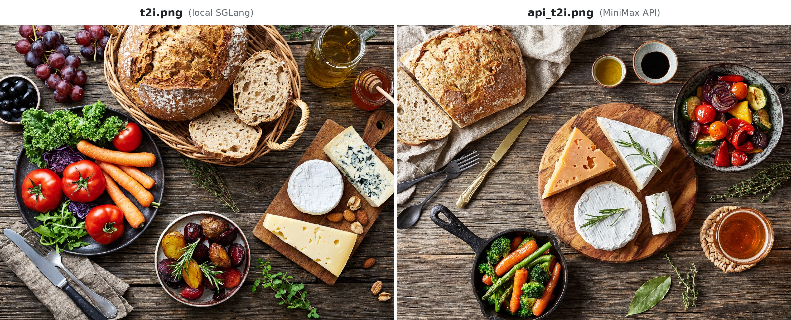
<em>t2i.png from local SGLang (left) and api_t2i.png from the MiniMax API (right), 4736x3552 (4:3 picked by H3-Image-Context-IR)</em>
case-Edit
instruction.edit.txt with the reference image reference1.png as ``.
| Stage | Request | Result |
|---|---|---|
| Prompt Enhancement: H3-Image-Context-IR (MiniMax API) | python3 context_ir.py edit (script) | revised_prompt.txt, revised_size.txt; our run: revised_prompt.edit.txt, revised_size.edit.txt (4096x4096) |
| MiniMax-H3-Image generation: local SGLang | python3 edit.py --prompt revised_prompt.txt --size $(cat revised_size.txt) (script) | edit.png |
| E2E API Reference: image editing by directly calling the MiniMax API | python3 api_generate.py edit (script) | api_edit.png |
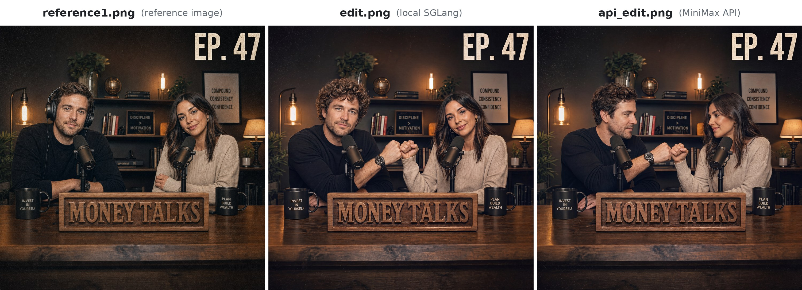
<em>Reference image reference1.png (left), edit.png from local SGLang (middle) and api_edit.png from the MiniMax API (right), 4096x4096 (1:1 picked by H3-Image-Context-IR)</em>
Showcase
Text-to-image and image editing results, shown downscaled.
<em>Photorealistic photography</em>
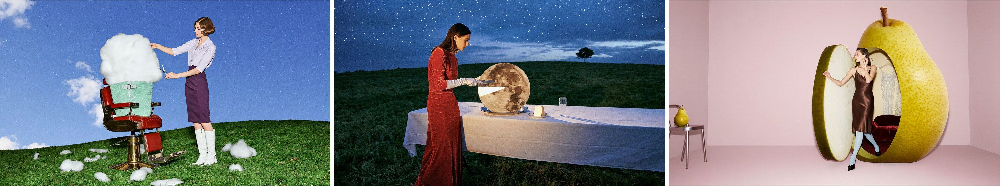
<em>Surreal editorial photography</em>
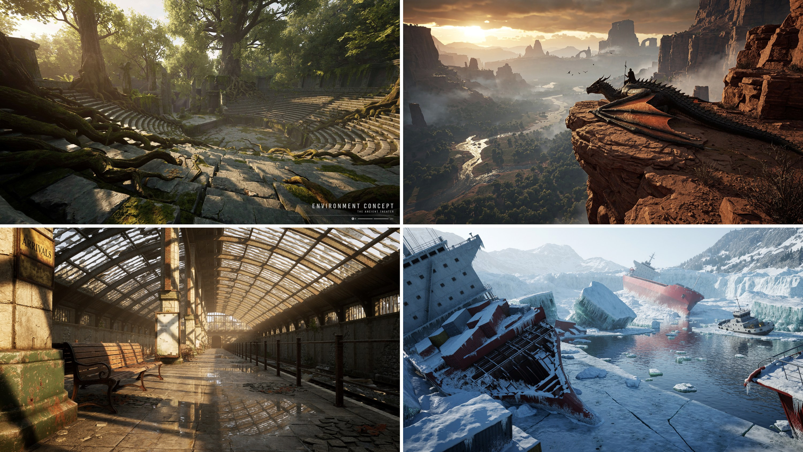
<em>Environment concepts</em>
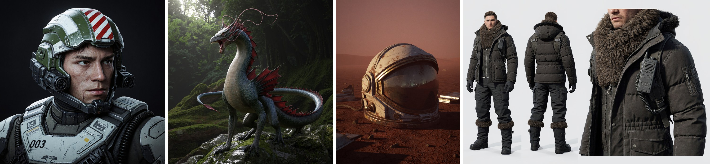
<em>Characters, creatures and props</em>
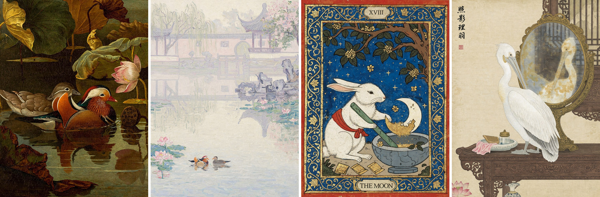
<em>Painting and illustration styles</em>
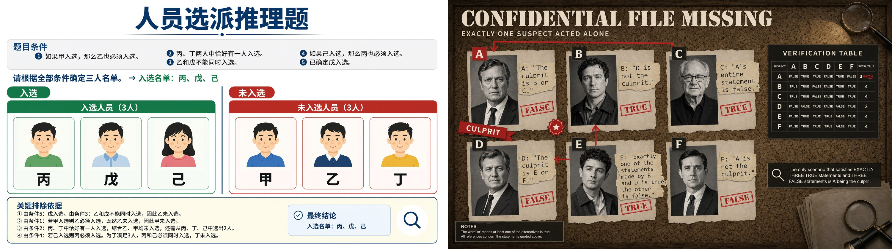
<em>Text rendering with reasoning: logic puzzles in Chinese and English, solved correctly on the board</em>
<em>Image editing, one reference: an untextured 3D render (left) turned into a film still of a lunar research base (right)</em>
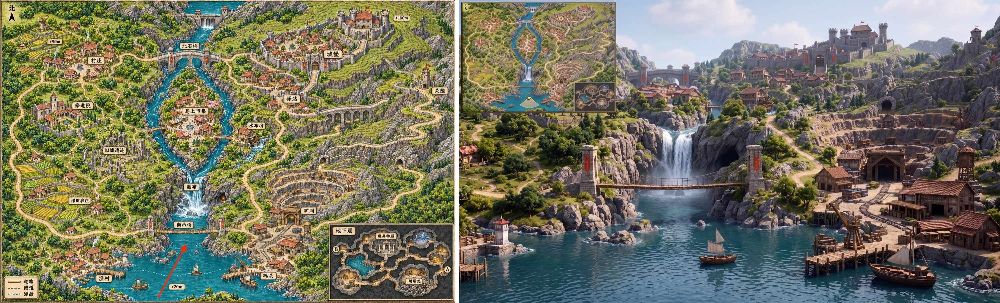
<em>Image editing, one reference: a game map (left) turned into a first-person 3D game view from the red arrow's position, with the map as a minimap (right)</em>
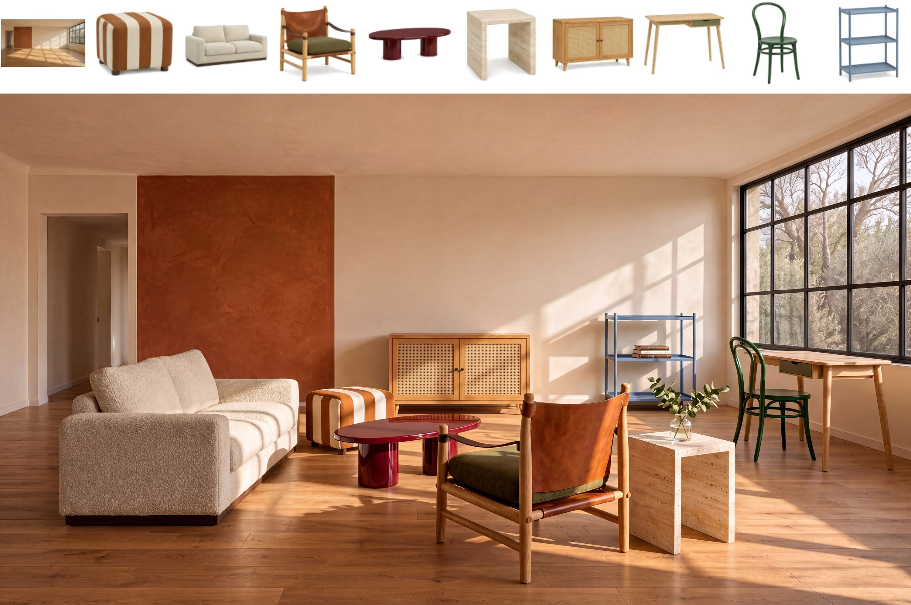
<em>Image editing, ten references: an empty room and nine pieces of furniture (top) composed into one living room (bottom)</em>
License
- MiniMax-H3-Image is released under the MiniMax-H3-Image Community License Agreement.
- The T2I PE Model (MiniMax-H3-Image-PE) is part of MiniMax-H3-Image and is accordingly subject to MiniMax-H3-Image Community License Agreement.
- The separate written authorization described in Section IV of the license is requested through Application form
Contact Us
Contact us at model@minimax.io.